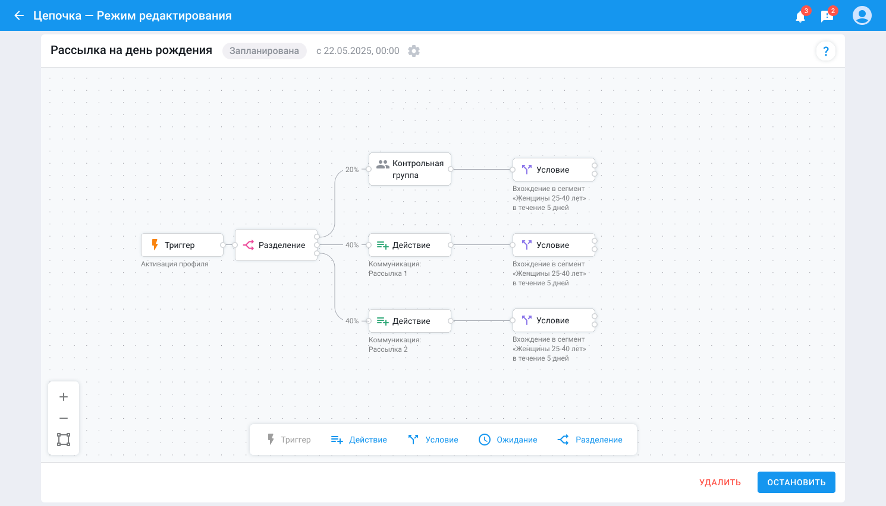
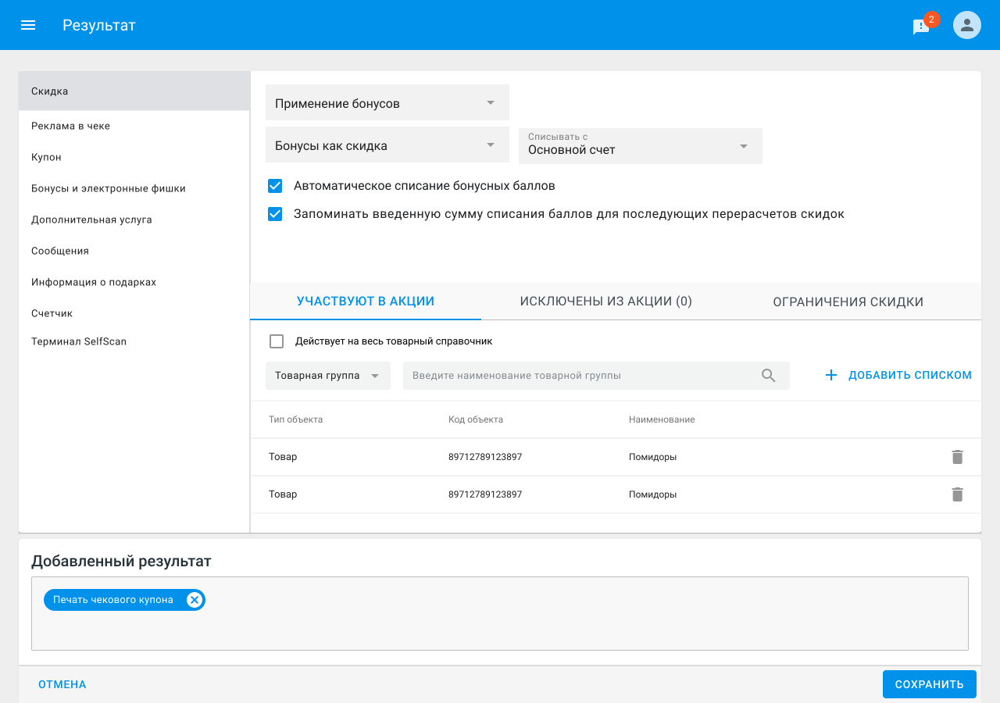
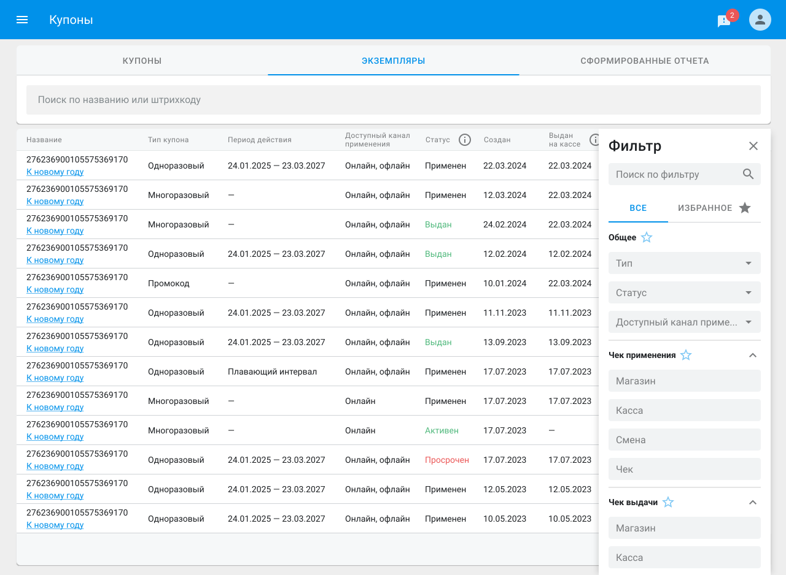
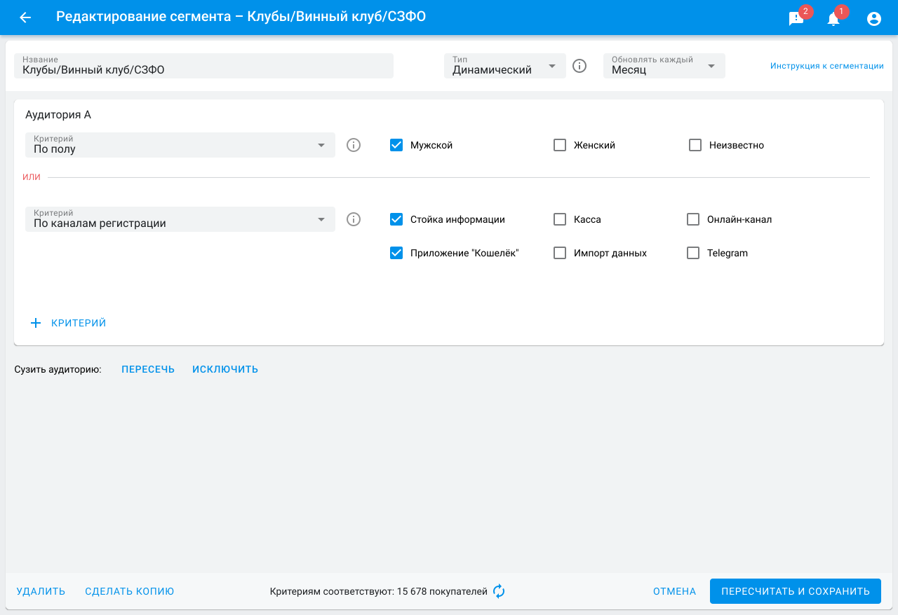
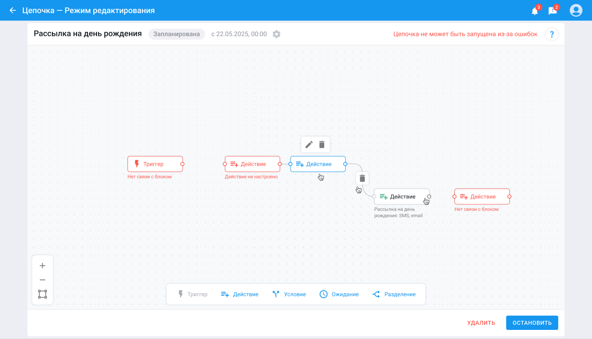
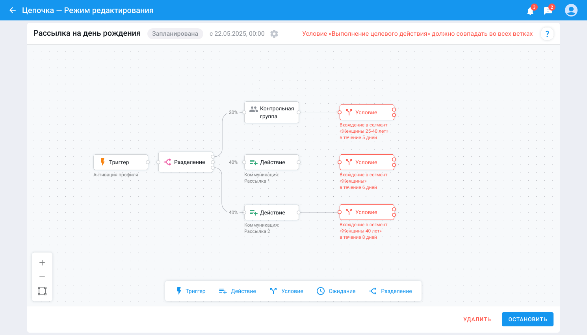
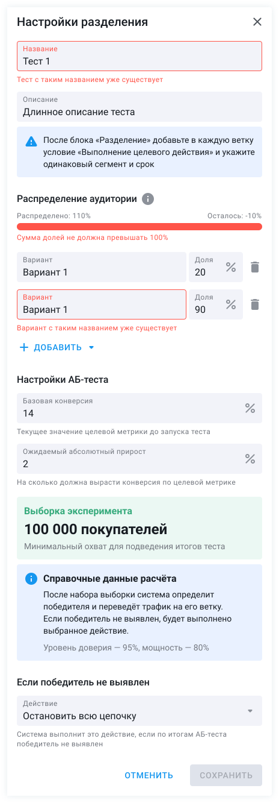
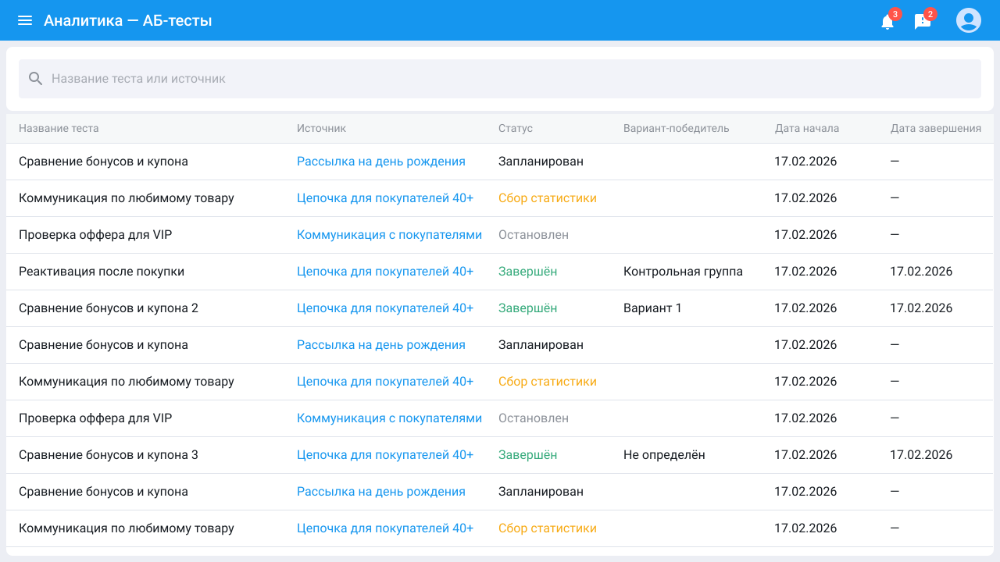
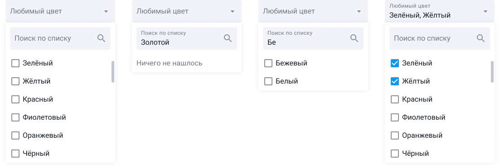

Set Loyalty
B2B-платформа автоматизации маркетинга и программ лояльности для крупного и среднего ритейла. Проектирую весь продукт: от сегментации до триггерных цепочек.



Проектирую весь продукт, а не один модуль
- Вклад
- Сегментация покупателей, акции, бонусы, купоны, триггерные цепочки и A/B-тесты: от разбора требований до релиза
- Система проверок и предупреждений, которая ловит ошибки до запуска кампании
- Единые паттерны и дизайн-система продукта
- Интервью с представителями «Ленты» и процесс дизайн-ревью
- Результат
- Запущены новые модули сегментации, акций, купонов, коммуникаций и A/B-тестов
- Сложные настройки маркетинговых механик стали проще, а ошибок при запуске меньше
- Триггерные цепочки описаны в блоге CSI
Что я сделала в продукте
- Сегментация покупателей. Маркетолог собирает аудиторию из условий и сразу видит, кто в неё попадает.
- Акции, бонусы и купоны. Переработала сложные настройки механик: стало проще разобраться и труднее ошибиться.
- Триггерные цепочки и коммуникации. Конструктор сценариев, который реагирует на события покупателя.
- A/B-тесты и аналитика. Проверка гипотез прямо в продукте.
- Проверки и предупреждения. Система валидаций и ограничений ловит ошибки до запуска кампании.
- Дизайн-ревью. Выстроила процесс ревью и сопровождения задач до релиза.
Модули продукта




Триггерные цепочки: задача
Маркетологу нужно настроить последовательность действий после события покупателя и увидеть, по какому пути тот пройдёт. Например, после первой покупки можно дождаться следующего визита, проверить условие и отправить сообщение нужному сегменту.
Как работала
Проводила интервью с представителями «Ленты», чтобы понять, как команда ритейлера работает с программой лояльности. В CSI мы проектировали инструменты для клиентов из России и других стран СНГ, включая Казахстан.
Работала с продактом, аналитиками, разработчиками и тестировщиками. Прорабатывала пользовательские сценарии, проектировала интерфейсы и проверяла реализацию на дизайн-ревью.
Конструктор цепочек
Вместе с командой спроектировали сценарий из четырёх типов блоков: триггер, условие, ожидание и действие. Проработали, как создать черновик, настроить параметры и проверить цепочку перед запуском. В запланированном сценарии интерфейс показывает, какие блоки требуют исправления.




A/B-тесты
Блок разделения делит аудиторию цепочки на варианты и контрольную группу. В настройках задаются доли вариантов и параметры теста, а результаты собираются в разделе аналитики.




Дизайн-система
Развивала общие паттерны для форм, выбора значений, статусов и сообщений об ошибках. Вместе с техническим писателем разработала редакционную политику, чтобы подсказки и системные сообщения последовательно объясняли, что произошло и что делать дальше.


Что вышло
Триггерные цепочки вошли в продукт Set Loyalty. В других модулях я работала над сегментацией покупателей, акциями, купонами, коммуникациями и A/B-тестами.